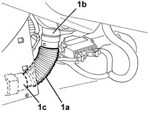

5010B45 DUCT FROM CLIMATE CONTROL SYSTEM - R R
- Path
- Procedures > 50 AUXILIARY UNITS > 5010 HEATING/VENTILATION - MISCELLANEOUS > 5010B HEATING/VENTILATION AIR PIPES AND DUCTS > 5010B45 DUCT FROM CLIMATE CONTROL SYSTEM - R R
- Kind
- repair procedure (removal / refitting; the operation number is the code)
- Applies to
- engines: 2.0 JTS, 3.2 V6, 1.9 JTD 16V; all production periods
- Interactive page
- https://sloeber94.github.io/elrnDB-aGt/en/#/125001499
Applies to: engines: 2.0 JTS, 3.2 V6, 1.9 JTD 16V; all production periods
 Removing
Removing
 Refitting
RefittingOp. 7040A65 PASSENGER COMPARTMENT BOX LOCK , ONE , R R
1. Remove the duct (1a) releasing it from the ducts (1b) and (1c).

Applies to: engines: 2.0 JTS, 3.2 V6, 1.9 JTD 16V; all production periods
Refitting
RemovingCheck that the duct is not damaged.
Fit the duct in place.
Topics linked from this page (1)
Topics that link to this page (13)
- 5040A80 EXPANSION/CONNECTION PIPE - R R
- 5040B30 EXPANSION VALVE (TUBE ORIFICE) - R+R
- 5040C15 AIR CONDITIONER HOUSING - R R WITH FACIA DISCONNECTED FOR VERSIONS WITH PASSENGER AIRBAG
- 5040C50 AIR CONDITIONER HEATER RADIATOR - R+R
- 5040C64 A/C MANUAL CONTROL SWITCH (ONE) - R+R
- 5040D84 AIR CONDITIONER LEFT HAND AIR MIXER FLAP CONTROL MOTOR - R R
- 5040D90 AIR CONDITIONER SYSTEM WIRING BUNDLE - R R
- 5505C34 INTERGRATED INSTRUMENT UNDER FACIA FRONT AIR BAG WIRING - R R
- 5505C41 CABIN WIRING - R R
- 7040A97 FACIA TRIM SUPPORT BEAM - R R
- 7040A98 INSTRUMENT FACIA TRIM SUPPORT BEAM - R R WITH FACIA REMOVED
- 7040L10 CABIN FLOOR CARPET - R R
- 7040L13 PASSENGER COMPARTMENT FLOOR SOUNDPROOFING - R R